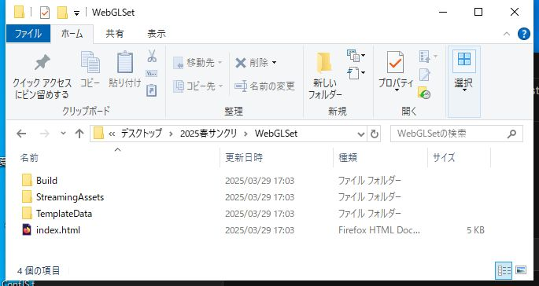
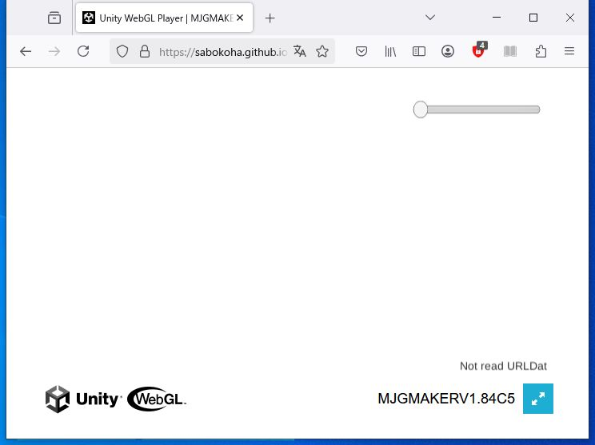
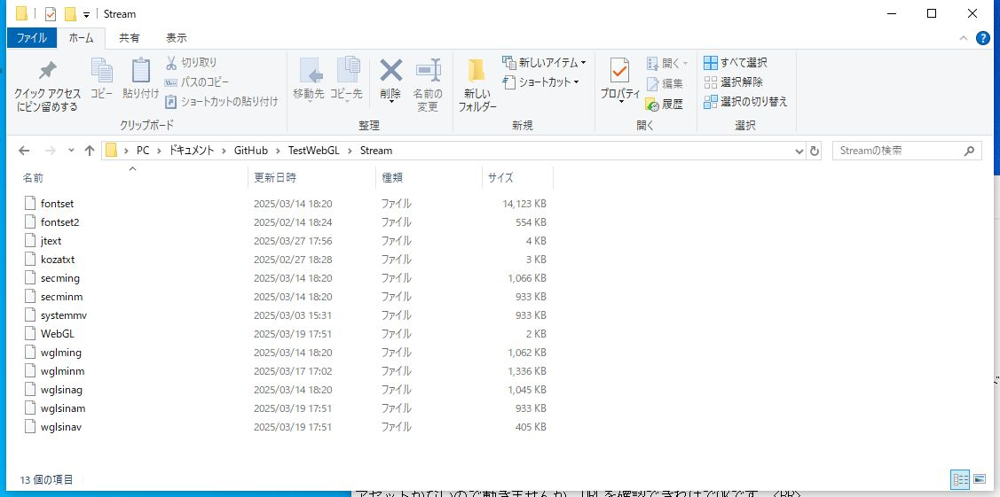
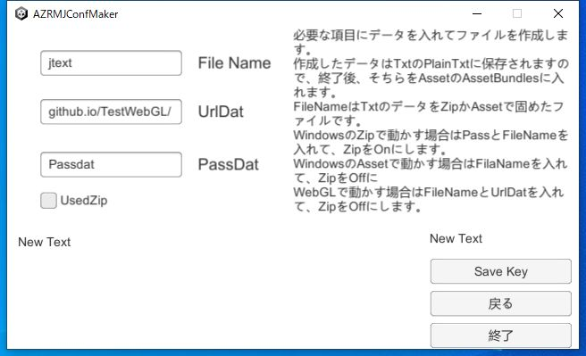
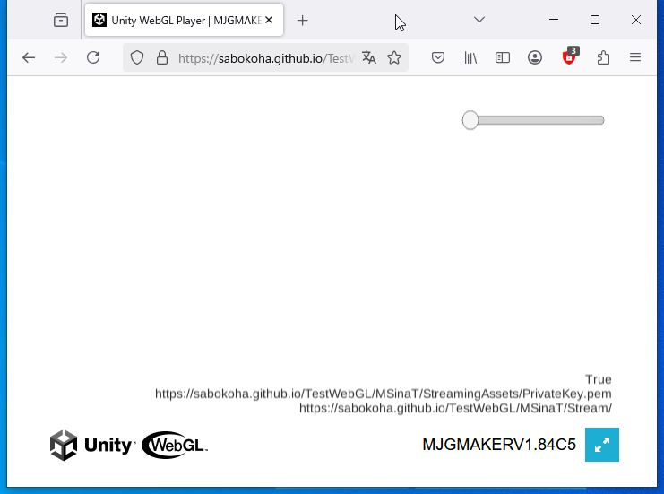

|
前回、アセットモードでの起動等をやりましたが、そのままWebGLでの起動をやってみます アセットモードはまず、使うファイル群が全く違うので、WebGLで使うためのファイルをダウンロードしてください WebGLSet |  |
|
それが出来たらアップロードします。アップロードされたURLが起動のURLです。 アップロードまでしたら、動くか確かめて、動いたらURLをブックマークしておきましょう。 アセットがないので動きませんが、URLを確認できればでOKです。 |  |
|
さて、起動の物とは別にStreamというフォルダを作って、中にWebGLフォーマットで作ったAssetBundleを全て入れます。 このStreamを上げるUrlをStreamのフォルダ名まで入れたものがアップロードのUrlです。 |  |
|
そこまで出来たら、Configで設定します。 KeyMakeのファイル指定でUrlというのがあるのですが、そちらの部分にAssetをアップロードするUrlを指定します。 その後、アセットモードと同じように、StreamingAssetsの中にkeyを配置します KeyMakeのUrlは最初に確認したUrlと同じです。 |  |
|
後は一通りアップロードして、稼働したらOKです。 動かない場合は、DebugTxtをtrueにしてアップロードしたURLを見るとURLが書いてあるのでそちらでファイルの確認等を行いましょう |  |